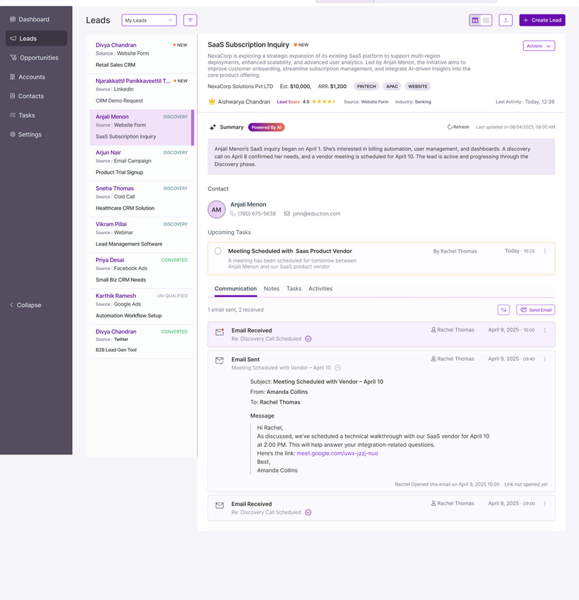
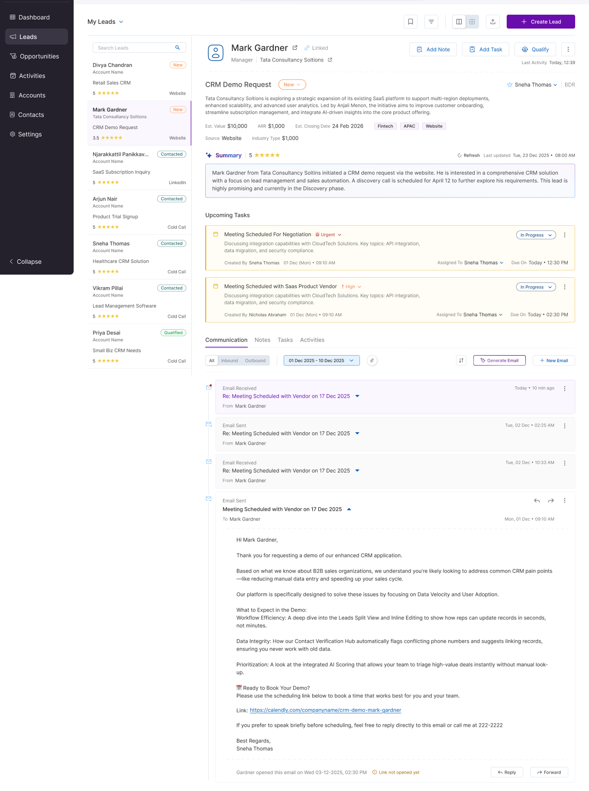

Case Study · CRM · Interaction Design
CRM — Lead Profile Redesign
Improved lead management experience by restructuring information and enabling faster actions
Problem
Information overload with no clear prioritization
The lead profile used a tab-based layout, but all information was given equal priority, making it difficult for users to identify what mattered most and take quick actions.
- All information was presented with equal weight
- No clear prioritization of key details
- Important actions were not easily accessible
- Users had to scan extensively to find relevant information
Key Insight“Users needed clarity on what matters first and quick access to actions without scanning across multiple sections.”
My Role
I focused on restructuring the lead profile information architecture, prioritizing high-value information, and introducing contextual actions while working within the existing CRM structure.
Key Constraint
The redesign needed to improve information hierarchy and action accessibility without removing the existing lead-management capabilities.
Initial Design Approach
The existing layout: a tab-based information structure
The layout organized information using tabs such as Summary, Communication, Notes, Tasks, and Activities.
While structured, the experience lacked prioritization and required users to scan through information to identify key details.
What Didn’t Work
The tab structure organized content — but didn’t prioritize it
- Lack of prioritization made scanning difficult
- Important details were not highlighted
- Actions were not easily accessible within context
- Users had to interpret information before acting
Design Shift
From flat layout to prioritized, action-oriented experience
The design evolved from a flat, tab-based layout to a prioritized and action-oriented experience by highlighting key information, introducing inline actions, and improving content hierarchy.
Before vs After
The transformation: from equal-weight to prioritized and action-oriented
Restructuring the information hierarchy and introducing inline actions made key lead details immediately visible and reduced the effort required to act on them.
Unprioritized Tab View

- No clear prioritization
- Important details buried in content
- Actions not easily discoverable
- High cognitive effort to scan
Prioritized, Action-Oriented View

- Key lead information prioritized at top
- Inline actions (Add Note, Task, Qualify)
- Structured content hierarchy
- Key information highlighted clearly
- Inline actions available within context
- Reduced scanning effort
- Better content hierarchy
Design Improvements
Key changes that drove the improvement
- Introduced clear visual hierarchy
- Highlighted critical information
- Enabled inline actions for faster workflows
- Reduced cognitive load through better structuring
Outcome
A clearer, action-oriented lead profile
- Key lead information is prioritized at the point of entry.
- Important actions are available within context.
- Information is structured according to decision-making priority rather than equal visual weight.
- The redesign reduces the need to scan across multiple sections before taking action.
Key Takeaways
What this project reinforced
Design for prioritization
→ Not all information should have equal weight
Improve action accessibility
→ Actions should be available where decisions happen
Reduce cognitive load
→ Clear hierarchy reduces effort and improves speed